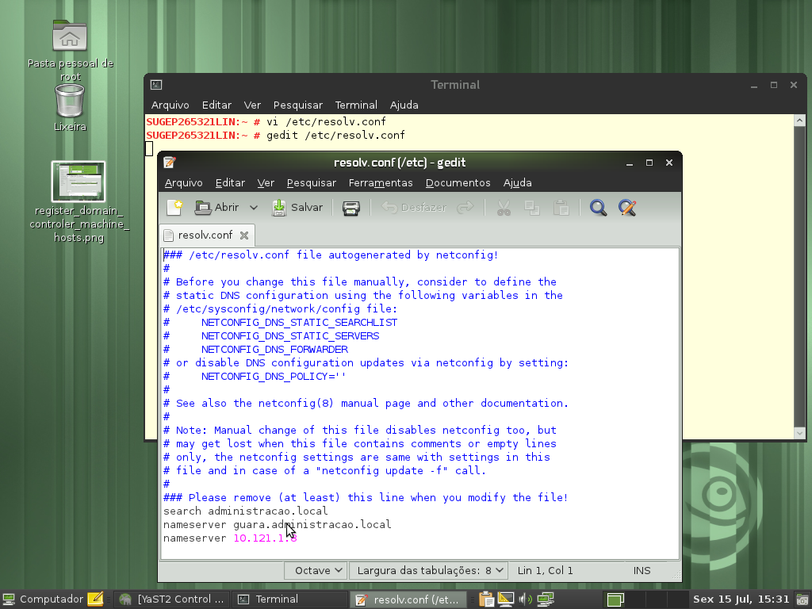
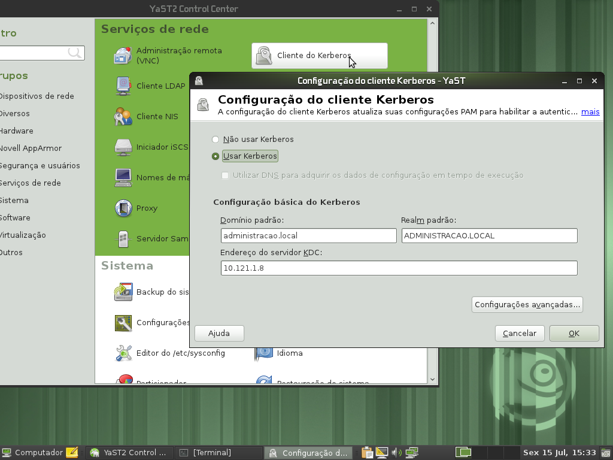

Linux - Participação no domínio do Windows
by Gilberto C. Andrade on 15 julho 2011
Tagged as: Active-Directory, kerberos, Linux, openSUSE, Windows,
Eu não quero compartilhar aquivo nenhum, apenas quero me logar no dominio MS, para assim usar internet, e-mail, enfim tudo que uma estação de trabalho com XP faria quando ingressa no dominio! Eu não quero criar um server com samba sem ser PDC E deixar na rede, quero apenas ao inves de usar o XP como estação de trabalho usar o openSUSE!
Este pedido de ajuda está registrado aqui na comunidade Viva o Linux.
Apesar de ser uma discussão antiga, ainda assim é bom fazer um passo a passo deste procedimento. Antes devo relatar que aqui na secretaria usamos Active Directory para autenticação, então foi esse ambiente que usei para testar a inclusão de uma estação Linux openSUSE em um Domínio Windows:
-
Registrar seu controlador de domínio(DC) na lista de nomes de máquinas. Adicione todo o nome qualificado primeiro e o apelido como alias: 192.168.1.2 = server.domain.com server
-
Editar o arquivo /etc/resolv.conf e adicionar seu DC como nameserver: nameserver = server.domain.com 
-
Configure o kerberos através do yast: o realm deverá ser escrito em letra maiúscula: DOMAIN.COM 
-
Configura o samba

SUGEP265338:~ # more /etc/samba/smb.conf
# smb.conf is the main Samba configuration file. You find a full commented
# version at /usr/share/doc/packages/samba/examples/smb.conf.SUSE if the
# samba-doc package is installed.
# Date: 2011-11-02
[global]
add machine script = /usr/sbin/useradd -c Machine -d /var/lib/nobody -s /bin/false %m$
domain master = No
security = ADS
workgroup = ADMINISTRACAO
realm = ADMINISTRACAO.LOCAL
idmap gid = 10000-20000
idmap uid = 10000-20000
usershare allow guests = No
template homedir = /home/%D/%U
winbind refresh tickets = yes
template shell = /bin/bash
[homes]
comment = Home Directories
valid users = %S, %D%w%S
browseable = No
read only = No
inherit acls = Yes
[profiles]
Não esqueça de reiniciar os serviços
 Adicionar a máquina ao domínio (neste momento utilizando o kerberos)
Adicionar a máquina ao domínio (neste momento utilizando o kerberos)
 net ads join -U Administrador
Adicionar a máquina ao domínio (agora utilizando o samba): no yast use a opção:”Participação no domínio do windows”,
marcando a opção “Usar informação SMB para autenticação Linux”
net ads join -U Administrador
Adicionar a máquina ao domínio (agora utilizando o samba): no yast use a opção:”Participação no domínio do windows”,
marcando a opção “Usar informação SMB para autenticação Linux”
 Reinicie a máquina
Reinicie a máquina

Use com moderação!